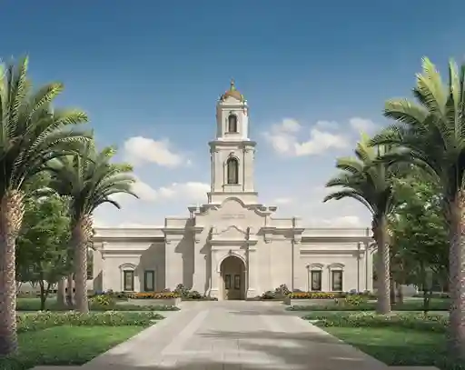

Discover the temples of the Church of Jesus Christ of Latter-day Saints in South America
Trujillo, Peru TempleArequipa, Peru TempleLos Olivos, Peru TempleLima, Peru TempleBuenos Aires, Argentina TempleSao Paulo, Brazil Temple

Santiago Oeste, Chile TempleQuito, Ecuador TempleLa Paz, Bolivia Temple